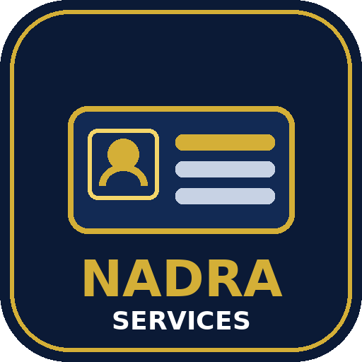

NADRA services made easy — open the official NADRA website and Pak ID online apply inside the app, with a simple guide to CNIC, CRC / B-Form, FRC, NICOP and succession services, what to bring, fees and helplines.
Official portals inside the app • Services guide • Tap-to-dial helplines 1777 & 051-111-786-100
⬇ Download APK (v1.0)This app collects and saves nothing. All services open on NADRA's official websites. Jilan Apps Official is not affiliated with NADRA or the Government of Pakistan.
Need help? WhatsApp: +92 305 7867149